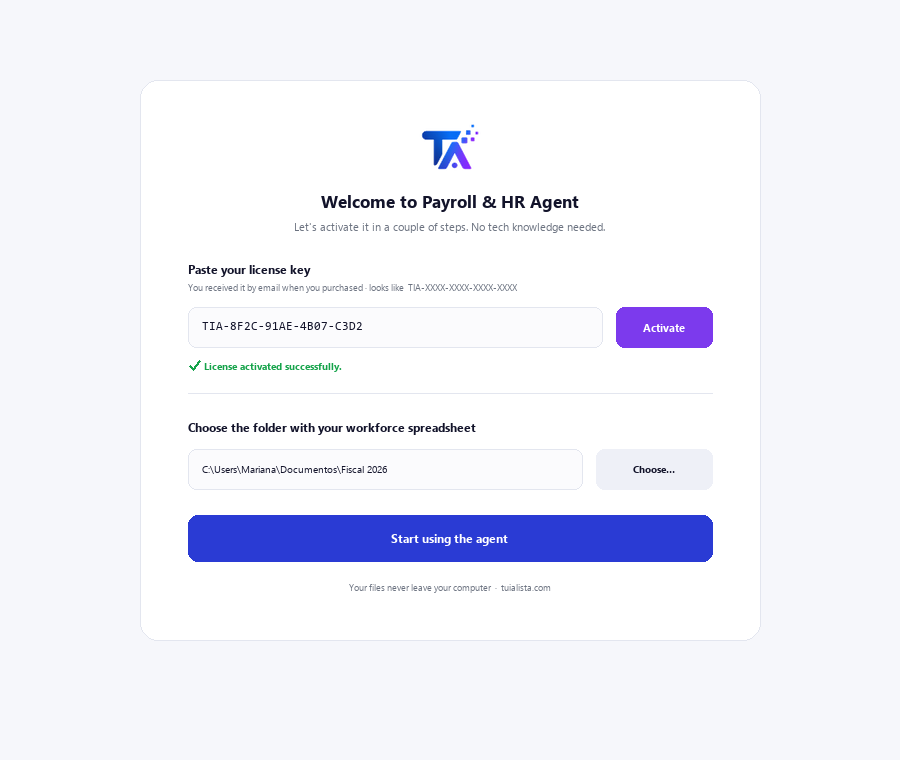
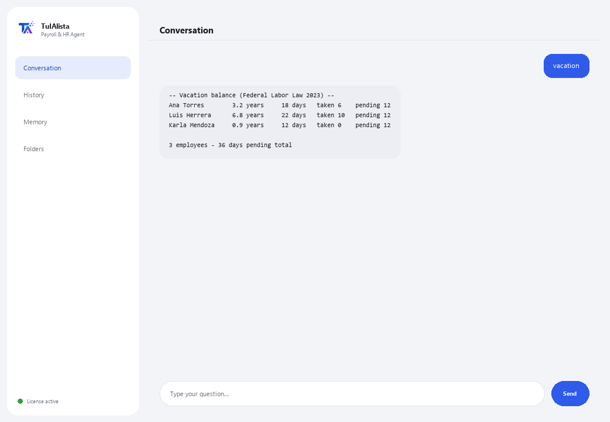

Payroll & HR Agent
Organizes your workforce, calculates vacation time under Mexican labor law, and watches critical HR dates — without the data ever leaving your machine.
What does it solve and what do you need?
Employee data is extremely sensitive and shouldn't live in the cloud. This agent processes it 100% on your machine: it loads your workforce, calculates vacation balances under Mexico's Federal Labor Law, and warns you about critical dates (contract endings, anniversaries) before you miss them.
- You need: your license key (TIA-XXXX-XXXX-XXXX-XXXX) and your workforce spreadsheet in Excel or CSV. No Python, no technical knowledge.
- First result in under 5 minutes: install, activate, pick your folder, and run vacation to see every employee's balance.
- Your employee data never leaves your computer — the calculation runs locally.
soporte@tuialista.com or visit tuialista.com/soporte — we usually reply the same business day.1 What this agent does
You point it at the folder with your workforce spreadsheet (Excel or CSV) and it:
- Loads employee data, automatically detecting the columns (name, role, salary, hire date, contract type...), even under different column names.
- Calculates the vacation balance under Mexico's Federal Labor Law (the 2023 “Fair Vacation” reform).
- Warns you about critical dates: upcoming contract endings and work anniversaries.
- Generates a payroll summary (total, average, by department and contract type).
- Lists upcoming anniversaries for recognitions.
- Alerts about contracts expiring soon.
- Generates a headcount report (hires, departures, headcount by area).
- Answers HR questions with anonymized context.
The result: an organized HR department, with dates under control and the data always staying home.
2 Installation (2 minutes)
For Windows. No constant internet connection needed, and nothing gets uploaded to the cloud.
Download the installer from tuialista.com/descargar (Payroll agent) and open it. It creates a desktop shortcut with the logo — no Python or terminal needed.
Double-click the new icon. Paste your license key (you received it by email when you bought it) and click Activate. You'll see a green checkmark once it's valid.
Select the folder with your workforce spreadsheet and click Start using the agent. Next time it starts right up — it remembers your key and your folder.

3 How to use it
The agent opens a chat window, like a messaging app — not a programmer's black screen. You type your command or question in the text box below, hit Send (or Enter), and the reply appears as a message, just like in this real image:

The commands below are the words you can type in that same text box:
> vacationPer employee: their tenure, the vacation days they're entitled to (Federal Labor Law table with the 2023 reform), days taken, and days pending.
> dates [days]HR events in the next N days (30 by default): contract endings and work anniversaries, sorted by urgency. E.g.: dates 45.
> payrollTotal payroll, average, highest and lowest salary, and a breakdown by department and contract type — without unnecessarily exposing sensitive individual data.
> anniversaries [days]Employees with a work anniversary in the next N days (60 by default).
> contracts [days]Temporary contracts expiring in the next N days (45 by default), including recently expired ones.
> headcountTotal headcount, active employees, departures, hires this year, and a breakdown by department and contract type.
> free-form question?Type any question in natural language, e.g.: how many employees hit 5 years this quarter?
> exitEnds the session (exit also works).
Want to see all 20 full recipes with a real example of each? Check the Recipe catalog — a separate document because it's long: catalogo_recetas.pdf next to this manual, or the interactive version at tuialista.com/guia/nominas/recetas.
4 Common use examples
Monthly HR review
dates 30 → contracts 45
Prep the year's vacation planning
vacation
Report for management
payroll → headcount
A quick question
who has an anniversary next month?
5 Frequently asked questions
Does my employee data get uploaded to the internet?
What formats does it accept?
Do I need to name my columns exactly?
How does it calculate vacation time?
Is the vacation calculation legally binding?
Does it expose individual salaries?
What language does it reply in?
Does it modify my employee file?
I updated the spreadsheet, does it pick it up?
Can I have several files?
6 Troubleshooting
It won't load employees / says “0 employees”
It misreads a column
The vacation calculations don't match what's expected
It says “Invalid license” or asks to reconnect
“No AI providers configured”
None of these fixed your problem? Write to us directly — we'll gladly look into it with you.
soporte@tuialista.com or visit tuialista.com/soporte — we usually reply the same business day.7 Privacy and confidentiality
Your employee data never leaves your computer.
- The agent loads and processes the workforce data locally, on your own machine. It doesn't upload employee data to any server.
- The vacation calculation, payroll reports, critical dates and headcount are all calculated on your machine.
- The only thing that travels over the internet is: (1) a check that your license is active — which doesn't include employee data —, and (2) when asking a free-form question, an anonymized context (aggregate summaries, without exposing individual salaries by default) is sent to the AI engine to draft the reply.